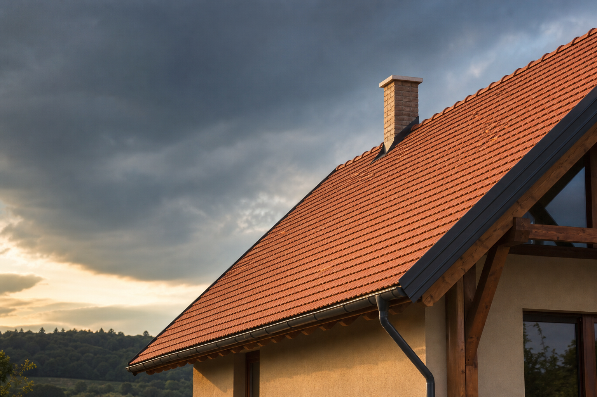

Baranya & Tolna vármegye
A tető, amely
értéket teremt.
Tetőépítés, felújítás és javítás több mint 10 év tapasztalattal — gondos kivitelezéssel, rendezett munkaterülettel.
01 / Tetőmester
Biztonság. Tartósság. Esztétika.
01 — Szolgáltatások
Minden, ami
a tetőhöz kell.
Az apróbb javításoktól a teljes tetőszerkezet kivitelezéséig. A megoldást minden esetben a helyszín, az épület és az Ön tervei határozzák meg.
Tetőépítés
Új tetőszerkezet precíz kivitelezése az anyagbeszerzéstől a rendezett átadásig, az épület adottságaihoz igazítva.
Tetőfelújítás
A meglévő tető állapotának felmérése és tartós megújítása, átláthatóan egyeztetett munkafázisokkal.
Tetőjavítás
Kisebb hibák, sérülések és beázási problémák szakszerű feltárása, majd célzott helyreállítása.
02 — Szemléletünk
A minőség nálunk nem cél.
Alapérték.
A tető hosszú távú döntés. Ezért a gondos tervezésre, a szakmai pontosságra és a korrekt kommunikációra ugyanakkora hangsúlyt helyezünk, mint magára a kivitelezésre.
- 01 Gondosan tervezett kivitelezés
- 02 Prémium alapanyagok lehetősége
- 03 Rendezett munkavégzés
- 04 Átlátható feltételek
03 — A folyamat
Négy lépés a
biztonságos tetőig.
- 01
Kapcsolat
Röviden írja le, miben segíthetünk és hol található az ingatlan.
- 02
Felmérés
A helyszínen megismerjük a tető állapotát és az Ön elképzeléseit.
- 03
Ajánlat
Egyeztetjük a megoldást, az anyagokat és a kivitelezés feltételeit.
- 04
Kivitelezés
A megbeszéltek szerint, precízen dolgozunk, majd rendezetten adjuk át a munkát.
04 — Működési terület
Közel Önhöz.
Helyben otthon.
Elsődlegesen Baranya és Tolna vármegye területén dolgozunk. Küldje el a települést és a feladat rövid leírását — visszajelzünk a lehetőségekről.
Felmérést kérek ↗05 — Gyakori kérdések
Mielőtt
belevágunk.
Valóban ingyenes a helyszíni felmérés?
Igen, a nyilvános ajánlat szerint a helyszíni felmérés ingyenes. A pontos helyszínt és időpontot előzetesen egyeztetjük.
Kisebb tetőjavítással is foglalkoznak?
Igen. A kisebb javításoktól a teljes tetőszerkezet kivitelezéséig vállalunk munkákat.
Ki szerzi be a szükséges anyagokat?
Az anyagok és alkatrészek beszerzése megbeszélés szerint történik, így a konkrét projekthez igazítható.
Jár garancia az elkészült munkára?
Meghatározott munkákra igen. A garancia pontos feltételeit mindig az ajánlat és az egyeztetett munkatartalom rögzíti.
06 — Ajánlatkérés
Az Ön tetője.
A mi figyelmünk.
Írja meg néhány mondatban a feladatot. A rendszer kimásolja az üzenetet, majd átirányítja a nyilvános ajánlatkérő oldalra.